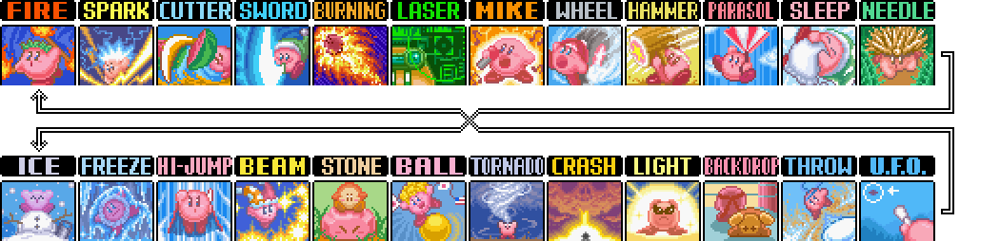
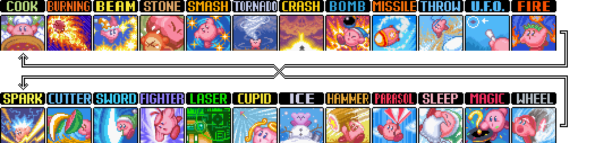
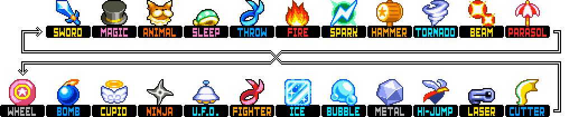
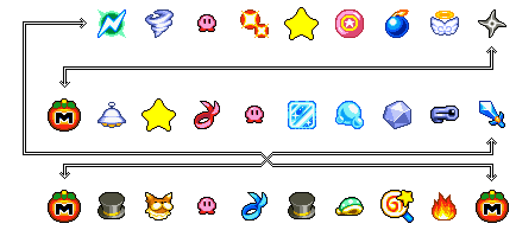
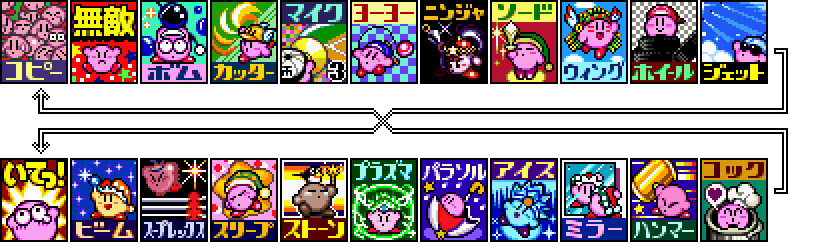

Home
Tutorials
Amazing Mirror Any% for beginners (2020)
Resources
Comparisons
Katam
Any% without mixes by swordsmankirby
Amazing Mirror 100% Tutorial by swordsmankirby (2019 / Outdated)
100% Smash backups
Practice cart by dotsarecool (direct download)
Interactive map by dotsarecool (TODO: fix the version I made with lables)
Squeak
Beginner any% route w/o bubble mixes
Beginner video overview using this route
Any% route used in my 41:42
Super Star (SDX)
Any% tutorial by Celabeat
100% tutorial by Celabeat (In progress)
Even more tutorials by Celabeat
Plasma chart by Celabeat
Arena manip document
Japanese TAS website
Mix roulettes / info
KA / Knidl

Katam

Squeak

Squeak (?) bubble

KSS / KSSU

TODO List (Sorted by priority, last updated 4/27/2021)
Replace the mix roulette section with images / improve main page css
Move google docs to my website
Katam DM4 video (consult tg before posting)
Katam fix kracko video
Katam route explanation video / doc
Katam upgrading movment guide (consult tg before posting)
Squeak 1-1 wheel mix explaination video / doc
Squeak bubble glitch explanation video
Squeak route explanation video / doc
Squeak any% & 100% tutorials
Updated version of SK's katam hundo tutorial including new route
KSS upgrading movment guide (consult nippo before posting)
KSS redline video (unless nippo beats me to it)
KSS Marx explanation video / doc
KSS Arena manip explaination video
Epic Yarn metaknight explantion video